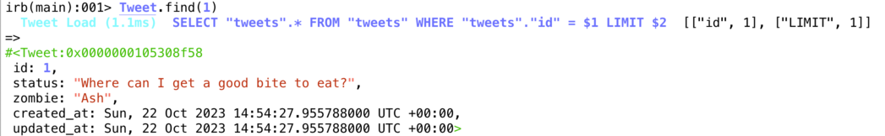

1 Model Basics
Rails Models are classes that represent tables in the database.
Rails implements the Active Record pattern in a class called ActiveRecord.
All the models in a Rails project inherit from ActiveRecord.
# file app/models/Tweet.rb
# this is the Tweet model that you create
class Tweet < ApplicationRecord
end
# file app/models/application_record.rb
# this file already exists
class ApplicationRecord < ActiveRecord::Base
primary_abstract_class
end
1.1 The Mapping
A quick overview of how Objects and Database relate when using ActiveRecord in Rails:
Database Ruby on Rails
--------------------------- --------------------------
table courses class Course
in the Database in file app/models/course.rb
one row in the table one object of the class Course
an attibute in the table a property of the object
SELECT * FROM courses WHERE id=7 Course.find(7)
2 The Model
Look at the model generated in file app/models/tweet.rb. Later you will add validations, associations to other models and the business logic here.
2.1 The model in the console
You can use the Rails console to work with
the model interactively. This is similar to the ruby console irb
but with your Rails app already loaded.
Any changes you make are really written
to the development database!
rails console
if you just want to play around and not make changes to the database use
rails console --sandbox
instead.
2.2 Finding a model
The database table always has a primary key id. You can use this
key to find a specific record:

When you type in Tweet.find(1) into the Rails console, you get two answers:
First (in color) it shows you the SQL query sent to the database. In this case
SELECT "tweets".* FROM "tweets" WHERE "tweets"."id" = ? LIMIT ?. You can see
that prepared statements are used, and that a limit is always placed on the number
of answers.
After the Arrow (=>) the Rails console shows the return value of the command
you typed in. Here this is an object. The console prints out the details of this
object using the inspect method.
From now on we will use this slightly shortended format to show Rails console input and output:
railsconsole> Tweet.find(1)
=>
#<Tweet:0x0000000105308f58
id: 1,
status: "Where can I get a good bite to eat?",
zombie: "Ash",
created_at: Sun, 22 Oct 2023 14:54:27.955788000 UTC +00:00,
updated_at: Sun, 22 Oct 2023 14:54:27.955788000 UTC +00:00>
(We will leave out the SQL, and some timestamps.)
2.3 Accessing the properties
You can access the properties of the model object as if it were a hash or through method names:
railsconsole> t = Tweet.find(3)
=> #<Tweet id: 3, status: "I just ate some delicious brains.", zombie: "Jim">
railsconsole> t.status
=> "I just ate some delicious brains."
railsconsole> t[:status]
=> "I just ate some delicious brains."
railsconsole> t.zombie
=> "Jim"
railsconsole> t[:zombie]
=> "Jim"
2.4 CRUD = Create, Read, Update, Delete
Let's see how ActiveRecord implements the four important capabilities of persistance:
2.5 Create
t = Tweet.new
t.status = "I <3 brains."
t.save
With new you create a new object just in memory. It is not stored in the
database yet and does not have an id yet. You can set its properties.
The save method tries to save it to the database.
On the Rails console you can see how the properties are nil in the beginning.
After saving to the database some of the properties are set:
railsconsole> t = Tweet.new
=> #<Tweet:0x0000000106688358 id: nil, status: nil, zombie: nil, created_at: nil, updated_at: nil>
railsconsole> t.status = "I <3 brains."
=> "I <3 brains."
railsconsole> t.save
TRANSACTION (3.8ms) BEGIN
Tweet Create (9.2ms) INSERT INTO "tweets" ("status", "zombie", "created_at", "updated_at") VALUES ($1, $2, $3, $4) RETURNING "id" [["status", "I <3 brains."], ["zombie", nil], ["created_at", "2023-10-22 17:12:31.990939"], ["updated_at", "2023-10-22 17:12:31.990939"]]
TRANSACTION (2.0ms) COMMIT
=> true
railsconsole> t
=>
#<Tweet:0x0000000106688358
id: 4,
status: "I <3 brains.",
zombie: nil,
created_at: Sun, 22 Oct 2023 17:12:31.990939000 UTC +00:00,
updated_at: Sun, 22 Oct 2023 17:12:31.990939000 UTC +00:00>
2.6 Read
There are many ways to read data from the database. We already saw find which
uses the primary key and always returns one object. The method where is used for more general select - where SQL statements.
t1 = Tweet.find(3)
t2 = Tweet.where("created_at > '2023-10-21'")
t3 = Tweet.where(zombie: 'Ash')
In the Rails console you can see the return values: where returns serveral objects in the end.
railsconsole> t2 = Tweet.where("created_at > '2023-10-21'")
Tweet Load (1.0ms) SELECT "tweets".* FROM "tweets" WHERE (created_at > '2023-10-21')
=>
[#<Tweet:0x00000001066070a0
...
railsconsole> t2
=>
[#<Tweet:0x00000001066070a0
id: 1,
status: "Where can I get a good bite to eat?",
zombie: "Ash",
created_at: Sun, 22 Oct 2023 14:54:27.955788000 UTC +00:00,
updated_at: Sun, 22 Oct 2023 14:54:27.955788000 UTC +00:00>,
#<Tweet:0x0000000106606f60
id: 2,
status: "I <3 brains.",
zombie: "QueenRotten",
created_at: Sun, 22 Oct 2023 14:54:27.957318000 UTC +00:00,
updated_at: Sun, 22 Oct 2023 14:54:27.957318000 UTC +00:00>,
#<Tweet:0x0000000106606e20
id: 3,
status: "I just ate some delicious brains.",
zombie: "Jim",
created_at: Sun, 22 Oct 2023 14:54:27.958430000 UTC +00:00,
updated_at: Sun, 22 Oct 2023 14:54:27.958430000 UTC +00:00>,
#<Tweet:0x0000000106606ce0
id: 4,
status: "I <3 brains.",
zombie: nil,
created_at: Sun, 22 Oct 2023 17:12:31.990939000 UTC +00:00,
updated_at: Sun, 22 Oct 2023 17:12:31.990939000 UTC +00:00>]
2.7 Update
With update - as with new before - we see the difference between the
object in memory (t) which can be changed and the object in the database
which is only changed when t is saved back to the database.
t = Tweet.find(3)
t.zombie = "EyeballChomper"
t.save
In the Rails console you can see that the UPDATE statement in SQL really
only changes the one changed attribute.
Plus the property updated_at is automatically set.
railsconsole> t = Tweet.find(3)
Tweet Load (10.0ms) SELECT "tweets".* FROM "tweets" WHERE "tweets"."id" = $1 LIMIT $2 [["id", 3], ["LIMIT", 1]]
=>
#<Tweet:0x0000000106603ae0
...
railsconsole> t.zombie = "EyeballChomper"
=> "EyeballChomper"
railsconsole> t.save
TRANSACTION (4.6ms) BEGIN
Tweet Update (18.0ms) UPDATE "tweets" SET "zombie" = $1, "updated_at" = $2 WHERE "tweets"."id" = $3 [["zombie", "EyeballChomper"], ["updated_at", "2023-10-22 17:17:34.242526"], ["id", 3]]
TRANSACTION (0.9ms) COMMIT
=> true
2.8 Delete
To delete both the object in memory and in the database use destroy.
t = Tweet.find(3)
t.destroy
On the console you can see how destroy is translated to DELETE in SQL.
destroy gives the last version of the model as a return value.
railsconsole> t = Tweet.find(3)
Tweet Load (12.4ms) SELECT "tweets".* FROM "tweets" WHERE "tweets"."id" = $1 LIMIT $2 [["id", 3], ["LIMIT", 1]]
=>
#<Tweet:0x0000000106600b60
...
railsconsole> t.destroy
TRANSACTION (2.3ms) BEGIN
Tweet Destroy (3.5ms) DELETE FROM "tweets" WHERE "tweets"."id" = $1 [["id", 3]]
TRANSACTION (1.1ms) COMMIT
=>
#<Tweet:0x0000000106600b60
id: 3,
status: "I just ate some delicious brains.",
zombie: "EyeballChomper",
created_at: Sun, 22 Oct 2023 14:54:27.958430000 UTC +00:00,
updated_at: Sun, 22 Oct 2023 17:17:34.242526000 UTC +00:00>
2.9 Chaining ActiveRecord methods
Let's look at the example of using where again: the return value was of class ActiveRecord::Relation:
railsconsole> t3 = Tweet.where(zombie: 'Ash')
Tweet Load (9.6ms) SELECT "tweets".* FROM "tweets" WHERE "tweets"."zombie" = $1 [["zombie", "Ash"]]
=>
[#<Tweet:0x00000001062858c8
...
railsconsole> t3.class
=> Tweet::ActiveRecord_Relation
This class also supports all the ActiveRecord methods. This means
we can chain several wheres together. ActiveRecord can combine them
into a complete SQL statement:
railsconsole> tweets = Tweet.where("created_at > '2023-10-21'").where(zombie: 'Ash')
Tweet Load (1.0ms) SELECT "tweets".* FROM "tweets" WHERE (created_at > '2023-10-21') AND "tweets"."zombie" = $1 [["zombie", "Ash"]]
In fact there are many more methods we might want to use for chaining:
Tweet.limit(3)
Tweet.order(:zombie)
Tweet.select(:created_at, :zombie, :status)
Tweet.where("created_at > '2023-10-21'").
where(zombie: 'Ash').
order(:zombie).limit(3)
For the last three lines: Normally the dot is placed in front of the method when chaining. Here it is placed at the end, to enable copy-and-paste to the Rails console)
You can use the method to_sql to see the SQL Statement produced by the chained methods:
railsconsole> Tweet.select(:created_at, :zombie, :status).
where("created_at > '2020-10-01'").
where(zombie: 'Ash').
order(:zombie).
limit(3).to_sql
=> SELECT "created_at", "zombie", "status"
FROM "tweets"
WHERE (created_at > '2020-10-01')
AND "zombie" = 'Ash'
ORDER BY "zombie" ASC
LIMIT 3
The order of the methods is not relevant. You can also save an intermediate step to a variable, and then chain more methods to that variable later on:
railsconsole> query = Tweet.where("created_at > '2020-10-01'").
order(:zombie).limit(3)
railsconsole> query.select(:created_at, :zombie, :status).
where(zombie: 'Ash').to_sql
=> SELECT "created_at", "zombie", "status"
FROM "tweets"
WHERE (created_at > '2020-10-01')
AND "zombie" = 'Ash'
ORDER BY "zombie" ASC
LIMIT 3
2.10 Further reading
- The Rails Guides give a good introduction to a subject area:
- Rails Guide: Active Record Basics
- Rails Guide: Active Record Query Interface
- Use the Rails API documentation to look up the details: